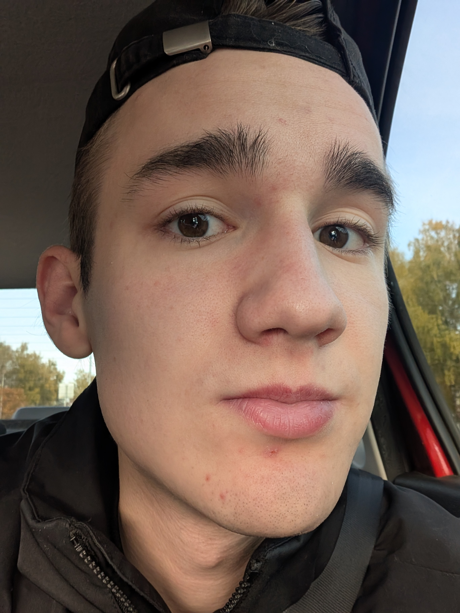

Oni Nillsen is an emerging artist and producer whose cinematic approach to electronic music has begun to attract growing attention across the scene. Launched in 2019, the project spent several years developing behind the scenes before making its official label debut with an EP release on ALL41 Records. Combining orchestral textures, atmospheric sound design, and emotionally driven songwriting, Oni Nillsen creates music that balances melancholy, warmth, and cinematic depth. His work has already led to collaborations with Nightblue Music and support from influential music platforms including Bass City, SuicideSheeep, Cloudx Music, Trap Woofer, 8D TUNES, and many others. At just 23 years old, Oni Nillsen continues to refine a distinctive sound that bridges the worlds of orchestral and electronic music, establishing himself as a promising new voice in the genre.
A showreel that amaze You
About Me

Hi, I'm Nikita Matvienko, a sound designer working under the moniker Nick Paul. My passion for audio began at an early age when I first heard the mind-blowing 'First Of The Year (Equinox)' by Skrillex on an obscure Texet MP3 player I received as a gift. The first game I ever booted up was Grand Theft Auto: Vice City when I was just 4 years old (I still can't quite wrap my head around that). That very game sparked my lifelong love for video games.
Years later, I started producing electronic music. After experiencing countless titles like NieR: Automata, Rise of the Tomb Raider, Assassin's Creed: The Ezio Collection, Uncharted 4: A Thief’s End, Cyberpunk 2077, Prey, the Dishonored series, and many others, I realized something crucial. I wanted to shape not just the emotions of a music listener, but the entire experience, perception, and aesthetic pleasure that a player ultimately receives.
Alongside this, I delved into 3D modeling and even worked as a vehicle artist, learning the complete game development pipeline. However, I realized that combining both paths was impossible and I had to choose one—so I chose sound. If it weren't for my deep, enduring love for audio, would I have been able to achieve what I have today?
Currently, I work as an outsource linear sound designer for an indie game company. How i design →
I have also released numerous tracks under the alias Oni Nillsen, having worked with labels such as ALL41Records and NightBlue Music. Want to know more? →
In my spare time, I do field recording, read game journalism, practice audio ripping to study game files, and play the MIDI keyboard.
If you're still reading this, it means I've caught your attention. Shall we work together? Contact
Selected Works
Implementation Breakdown
Game Audio Implementation Breakdown
Game Audio | Clean Gameplay
Cinematic Redesigns
Far Cry 3 & Cyberpunk 2077 - Trailer Audio Redesign & Original Score
Cyberpunk 2077: Phantom Liberty - Audio Redesign
Recommendations
A little bit about Oni Nillsen..
Music Background
4ÆM (Oni Nillsen REMIX)
What did you feel when you first heard 4ÆM by Grimes?Inspired by my first experience with Cyberpunk 2077...
Read moreHollow Hands(demo)
And you reach for me with hollow hands... Hollow Hands began as a remix of a track by...
Read moreMajor Crimes (Oni Nillsen REMIX)
Major Crimes inspired me to push its underlying tragedy even further. In this remix, the pain of the original...
Read moreUFO (Oni Nillsen Remix)
My reinterpretation of UFO by PhaseOne is a soundtrack to the storm already on the horizon. Dark atmosphere...
Read moreDelicate Weapon (Oni Nillsen Remix)
When I first heard Delicate Weapon, I felt safe. In the world of Cyberpunk 2077, where danger lurks around every corner...
Read moreOffensive
This composition was created entirely from the ground up—from recording the source material to the final sound design...
Read morePsycho
Heavy Rain
Clouds (VIP)
...
Paranoia
Lost Memories
Maybe You
Blame
Before
Revelation
A little bit about design..
I enjoy working on challenges that require unconventional thinking and encourage me to find my own solutions. While I regularly use a wide range of tools in my workflow—from presets to sample libraries—the part I find most rewarding is transforming and reimagining source material into something new. I am particularly drawn to creative constraints. Whether it's building a convincing drum kit entirely from the sound of water being poured into a glass or recreating the movement of a pile of scrap metal resting on the ocean floor using only a single synthesizer, these kinds of challenges push me to achieve the best possible result while exploring new techniques and approaches to sound design. This constant process of experimentation and discovery is what allows me to grow as a sound designer, expand my creative toolkit, and develop a deeper understanding of sound itself. For me, that pursuit of growth and exploration is one of the most important aspects of the craft.
Sound Design
Sample Manipulation
Запись, сэмплирование и синтез звука с нуля. Насколько далеко можно зайти, используя лишь подручные предметы и бытовые условия записи?...
ПодробнееSFX from Scratch
При работе над Sci-Fi проектами особенно важно сохранять вариативность и гибкость звуковой среды. Мир будущего...
Подробнее